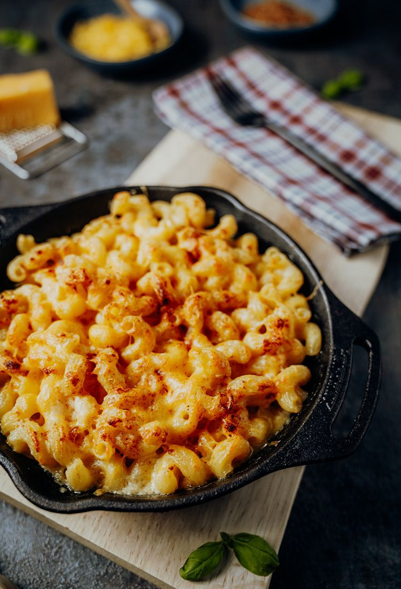

Macaroni and cheese é um prato típico dos Estados Unidos, feito com massa-cotovelo e queijo ralado.
Esta preparação pode ser servida como prato principal duma refeição, ou para acompanhar outras iguarias,
mas tornou-se um ícone na cozinha americana durante a Grande Depressão, quando a Krafts Foods
lançou essa comida em caixas, em 1937, ajudando milhoẽs dec americanos a terem uma alimentação decente e barata.
300g de macarrão "joelho"
2 xícaras de (chá) de leite
2 colheres (sopa) de farinha de trigo
Uma colher (sopa) de margarina
1 unidade de alho picadinho
Uma colher de chá de queijo ralado ou uma "mistura" de queijos diferentes
Noz moscada a gosto
1 xícara de creme de ricota
Pimenta do reino e sal a gosto
Parmesão para gratinar a gosto
1-Comece pré-aquecendo o forno com temperatura média enquanto você faz o macarrão.
2-Em uma panela coloque margarina e o alho. Vá mexendo até que comece a dourar.
3-Adicione aos poucos a farinha de trigo, mexa para se tornar uma pasta e depois vá pingando o leite até que colocar ele todo. Continue mexendo até que não grude.
4-Leve o macarrão para cozinhar e retire quando tiver al dente
5.Abaixe o fogo do creme, mas continue mexendo até que comece a borbulhar.
6-Junte o queijo ralado, o creme de ricota e continue mexendo por mais 5 minutos
7-Se o creme estiver muito grosso, coloque mais leite, mas vá acrescentando aos poucos para não ficar líquido demais.
8-Tempere o molho com noz, pimenta e sal
9-Coloque o molho em cima do macarrão escorrido e misture bem.
10-Cumpra a massa com queijo parmesão ralado e leve ao forno para gratinar.
11-Retire e sirva ainda quente